| あなたがつらいのは あなたのせいじゃない: あなたらしく自信をもって生きていく方法 | |
| 佐波井 まこと | |
| 佐波井まこと (2016) | |

はじめに
突然ですが、あなたはモテたいですか？
ナンパの成功率が高い人を観察するとよくわかるのですが、モテる男はいい身体をしています。
これは女性の本能はいい身体の男性を求めるというところから来ています。
モテる男は自分に自信があります。
自信があるから自分を異性にアピールできるのです。
自分に自信がないのに異性に近づいても、その人はあなたを魅力的に感じることはあまりないでしょう。
例えば、どこかの電気屋にでも行って、店員が自信なさげに商品を勧めてきた場合、あなたはその商品買いますか？
欲しい商品だったとしても、買いたくはならないと思います。
それと同じ話で、自分に自信がないと人にアピールすることは難しいです。
男性が自信を持つ理由の１つに健康的な体を手に入れるということがあります。
なぜなら女性にモテるからです。
筋肉質の肉体、女性の本能に直接訴えかける最強の武器なのです。
これは女性も同様で、健康的な女性には魅力があります。
肌つやがなく、目がうつろの女性は魅力があると周囲からは思われにくいです。
筋力トレーニングをすることで、身体が筋肉質変わることは誰にでもわかります。
でも、続けられないという人も多いです。
これは、筋力トレーニングを習慣にして続けることができないということが問題です。
この問題は今までにあなたが認識として持たされた考え方、意識、認識がそう思わせているのです。
前置きが長くなりました。ここからが本題です。
私は子どもの頃、運動や筋トレに苦手意識を持っていました。
今では大好きです。
これは私の中で認識が変わったからです。
認識が変わればトレーニングを続けることができます。
それは、今どんな認識を持っていたとしても、"筋トレを続けることができる認識を持つことができる"ということです。
ややこしい日本語で申し訳ないですが、言いたいことは、
子供の頃の意識、認識を大人になっても持ち続ける必要はありません。
同様に、過去の意識、認識を今囚われ続ける必要もありません。
認識は変えることができます。
この書籍ではその認識を変える方法もご紹介します。
この本を読み、内容を実践することで健全な自信を持ち、健康的な心身を手に入れ、ワクワクした人生を送ることができます。
自信をつけるために筋トレをすればいいだけならこの本を読む必要はありません。
この本にはそれ以上のものがあります。
自信をつける仕組みも、なりたい自分になることができる方法もお伝えしています。
気持ちが切り替わらなくて、ずっとネガティブな感情を抱えていたとしても、それも解消できる方法をこの本でご紹介しています。
我慢の人生を生きていくことも多い世の中で必要なワークもこの本の中でご説明しています。
もしあなたが自信をなくしているのなら、きっと過去に何かがあってそのことが尾を引いているのかもしれません。
ですが、それすらも変える方法があります。
簡単にできることで自信を取り戻し、あなた自身を進化に導くことができます。
しかしながら、実際に行動するのはあなたです。
知識を得ることだけではなく、この本に書かれていることを行動に移してください。
あなたが自信に満ちあふれる、この本はそのための１冊です。
１
自信がない？だったらこの方法を試そう
■ あなたもなりたい姿になることができる！エナジックファイブメソッド
なりたい姿になる前にすること、それは目標を立てたあとにイメージトレーニングをすることです。
なぜなら、人間はイメージができないことは行動を起こそうとはしないからです。
イメージは行動を生み出します。
人間は脳の機能としてイメージしたことは行動したくなるという習性を持っています。
ちなみに行動を伴わないイメージは妄想といいます。
イメージと妄想の違いは、行動力が生まれるか生まれないかの違いです。
何についてイメージをするかというと、それはあなたの未来の姿です。
例えば、健康的で筋肉質な体つきの自分、自信を持って堂々としている自分、スーツが似合う自分、女性にモテモテな自分・・・、あなたが未来になりたいと思うものをイメージします。
陸上競技のメダリストがしているイメージトレーニングは、自分の最高の状態だけでなく、オリンピック競技決勝時の会場の雰囲気、歓声、自分のパフォーマンス、スコア、メダルを掲げる自分、そしてその時の感情の動きまでありありとイメージしています。
それが競技者の強さになっています。
ただ想像するだけではあまり意味がありません。
イメージには正しい方法というものがあります。
それが、
エナジックファイブメソッド
になります。
このメソッドを順に説明していきます。
（１） なりたい自分の姿を決める
未来の良い自分になるためにも、まずあなたがどうなりたいかを明確にイメージすることが大切です。
人間は脳の機能としてイメージしたことはしたくなるという習性を持っている ため、人間はイメージできないものにはモチベーションが上がりません。
と言われても、イメージが思い浮かばないこともあります。
そんなときイメージするのに役立つもの、それは
画像
です。
例えば細マッチョになりたいのであれば、細マッチョの画像を探してきます。
芸能人、スポーツ選手、モデル、誰でも大丈夫です。
絵があるとイメージしやすいのです。
画像は自分の体が変わったあとの姿をイメージするために使います。
イメージのレベルは現在の自分よりもかなりレベルの高い、現状の延長線上では達成できないレベルにしましょう。
例えば、筋肉がついていないメタボ体型の人間が今の自分だとしたら、プロボクサーが未来の自分というようなものを選ぶのです。
今の生活を続けていたら到底無理だと思えるかもしれませんが、こういうイメージが形として正しいのです。
なぜなら、人は「達成できるかできないか」で悩み、それが行動のブレーキとなる からです。
(もしくはできたかできなかったか、というものもあります)
できるかもしれないできないかもしれない・・・で悩むことは、あなたの行動を止めるのです。
そうではなく、できなくて当たり前と思って取り組むのです。
あなたの脳の中のイメージなので、誰に遠慮することもありません。
そして、たとえ達成できなかったとしても、あなた自身にダメージがあるわけでもありません。
まったくできないと思う夢のようなイメージを毎日楽しんで追いかける 、それが人生を楽しむコツです。
例えばこんなような風なイメージをしましょう。
| 現在の自分 | 未来の自分 |

|
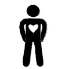 |
| 例. 自分が嫌いで自信がないメタボ | 例. 細マッチョな体で自信がある自分 |
| 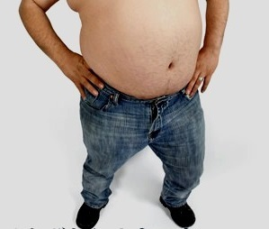 | |
| 未来の自分を強く現実として感じると、未来の自分が現実になる。 | |
（２） 未来のなりたい自分を言葉で表現する
なぜこの言葉による表現を行うのかというと、未来の自分を強く現実として感じるためです。
未来の自分を今現在強く感じると、それが行動力となります。
今、筋肉がついていなかったとしても太っていたとしても、未来の自分を今強く感じる必要があります。
そうすることで行動しようということです。
行動力が沸かないのであれば、それはイメージではなく妄想 ということになります。
行動するために必要な未来のなりたい自分を言葉で表現する作業を行います。
パソコンでも言葉にすることはできますが、ここではノートとペンを用意してください。
そして、なりたい自分を言葉で表現 します。
しかし、やみくもに書いていいわけではありません。
まずはあなた自身が自分を信じることができるようになると信じること です。
自信がなくなると何もできなくなります。
自信を持つことは誰にでもできます。
自信を持つために大切なことは、誰かと比較しないこと です。
例としては、あいつよりオレの方が偏差値が上だ。
あいつよりいい大学に入っていて、いい成績を収めている。
などです。
誰かより点数が上だ下だと言っているうちは、自信をつけるのはとても難しいです。
なぜなら世界のどこかには、あなたより上の人間は必ずいるからです。
その自信の付け方だと、能力を測る物差しの上であなたは戦うことになります。
あなたの先に行く人、つまりあなたより能力が高い人は必ずどこかにいます。
学校の中、会社の中・・・その中で認められるのはあなたより能力が高い人だけだからです。
人間が誰しも持っている承認欲求。
それが満たされるのは、その物差しの上での能力値の高い人です。
学校を始め社会では、否応なく比較はされます。
あなたの能力も例外なしに間違いなく比較されます。
しかし、その比較とは別のところにあなたの自信を置く必要がある のです。
人の能力はあなたの自信とは関係がありません。
この言葉を否定する人がいるとしたら、人の能力があなたの自信と関係があると、そう思い込んでいるだけです。
例えばこういうことでしょうか？
あいつがオレより会社でいい成績を上げたからオレは自信がないんだ。
よく考えてください。
変なことだとは思いませんか？
人と比較して自信をなくし、それを我慢して生きていく必要はないのです。
世の中一般では比較はされますが、それにまともにつきあわなければよいのです。
マジメに付き合って、我慢をして劣等感を抱えて生きるのはやめましょう。
人と比較するのは今すぐやめてください。
あなたがあなた自身を守るために。
自信を持つことは誰にでもできます。
それには比較するのをやめることです。
たとえ、親兄弟が比較をしていても、まともに応じるのはやめましょう。
あなただけは。
誰かと比べた指標や数値ではなく、あなたがなりたい自分を記述してください。
あなたが成長し続ける言葉であるとよいです。
脳は否定文を処理できないため、肯定文で表現してください。
具体的に数値を定めたり、正確に感情的表現もあると良いでしょう。
この数値は誰かと比較するのではなく、過去の自分と比較してください。
例えば、半年後にＴＯＥＩＣで８００点取る！というようにしてください。
言葉はイメージを起こし、イメージは感情を動かします。
未来の自分のイメージは自分らしさにあふれているはず、それを言葉にするのです。
例を掲載しておきます。
参考にしていただけたらと思います。
・私は半年で体重を２０キロ減らし、かっこよくなり女の子にモテました。
・私の富は今まさにどんどん増え続け、安心と自由を手に入れています。
・私は周囲やお客様から愛されている人間です。
（３） 未来のなりたい自分の言葉を読み上げて、イメージする
未来のなりたい自分をノートにしっかり書いて、毎日読み上げてください。
この読み上げるのをただの日課にするのではなく、今の自分の体験としてありありとイメージ をしてください。
このイメージをすることを経て、未来のなりたい自分になるための行動力に変わっていきます。
しっかりと具体的に鮮明に描くことが大切です。
イメージは未来の記憶です。
というのは、
未来のなりたい自分の記憶をイメージの中で作る
ことが重要になってきます。
なぜこれが重要かというと、未来のなりたい自分のイメージで考えて行動するためです。
その考えが未来に向かって進む映像が思い浮かべながら日々を過ごし、その未来のなりたい自分の記憶に向かって動き始めると、未来のなりたい自分になれるということです。
例えば、英語が話せるようになりたいのであれば、もうネイティブスピーカー並みに欧米の人達と楽しい会話をしているイメージをするということです。
そのイメージという未来の記憶を実現するために "英会話の勉強する" という行動をとるのです。
（４） 未来のなりたい自分になったときのうれしい感情を今この瞬間に感じる
未来のなりたい自分になれたらうれしいですよね。
そのうれしいという感情を今感じてください。
このうれしい感情とイメージを結びつけることが、未来のなりたい自分を実現するための行動をとるカギとなります。
なぜかというと、これは未来のなりたい自分の感情を今に持ってくると脳はこちらが現実だと勘違いする からです。
よいイメージに対するいい勘違いを起こすのです。
この勘違いがあなたのイメージを未来の記憶として定着させ、その未来を実現させる行動力となる のです。
（５） 心の中の言葉によい口癖をつける
このよい口癖というのを詳しく言うと、
自分の心の中で常に言っている "ひとりごと" のことです。
この "ひとりごと" 人間は１日６万から１０万もの言葉を自分でつぶやいています。
この心の中の言葉を良いものにしていくということです。
人間は言葉で映像を思い起こし感情が沸き起こる生き物 です。
意識的に、この自分の心の中で常に言っている"ひとりごと"で、良い感情を沸き起こそうということです。
例えば、失敗したときに「しまった！」という言葉を心の中で口にすることで、脳ではあたかもその失敗をもう一度体験することになります。
この失敗の言葉を繰り返すことで、その失敗を繰り返すように自分を導いていきます。
そのため、否定的な言葉を自分の心の中で繰り返さないようにしていこうということです。
また、他人から否定的な言葉を聞かされるのも同じ効用を持ちます。
否定的な言葉を浴びせる人にできる限り近づかないようにすることも大切 です。
ではどうすればよいのかというと、まずは否定的な言葉を心の中でしないことが大切です。
その後に効果的な言葉を自分の中でするということです。
どういうことか具体的に心の中の口癖の段階と合わせて説明してきます。
| 心の中の口癖４段階 | |
|
（１） あきらめている状態
例えば、心の中で「できるわけがない」「無理だ」などの言葉を発している状態。多くの人がこの状態にとどまっている。まずこの状態から脱する必要があります。 |
|
|
（２） 目的が正確に定まっていない状態
例えば、心の中で「～するべきだ」「～であったらいいなー」という言葉を発している状態。この状態では問題が解決しません。 |
|
| 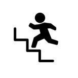 |
（３） 脱出しようとする状態
例えば、心の中で「この状態から抜け出そう」「もうこんなことはやめよう」などの誓いの言葉を発している状態。目標に向かい、問題の解決策を探し始めます。 |
| 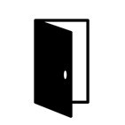 |
（４） 良いイメージの中で行動できている状態
例えば、心の中で「明日はこうありたい」「次はこうする」などの未来のなりたい自分が話す言葉になっている状態。この状態になると単なる願望ではなく、今この場で実現しているような感覚で生きている状態になります。 |
この４段階目の心の中の言葉が、効果的でよい心の中の口癖の状態です。
もし、現状１段階目だったとしても、徐々に心の中の口癖を変えていけばよいのです。
心の中の口癖をネガティブからポジティブにする方法とは
自分の中のわるい口癖に気付き、良い口癖に置き換え続けながら生活をする
ことです。
この文章を読んだ直後はさすがに気が付くと思いますが、しばらく経つと１段階目の口癖に戻ることがあります。
自分で自分にかける言葉を大事にしてください。
未来のなりたい自分になるような言葉に置き換えながら生活する のです。
例えば、「オレは頭の悪いやつだ。」から「オレは最高に頭のいい人間だ！」に変換しながら生きていくのです。
まずは自分のことを信じることができるようになりましょう。
そのために、このエナジックファイブメソッドを実行していきましょう。
イメージは誰にでもできます。
脊髄だけで生きている人はこの文章が読めるわけがなく、誰にでも脳みそがあります。
なので、誰にでもイメージはできます。
自分がなりたい姿をまずは描いてください。
誰かに遠慮する必要もありません。
この文章を読んでいるあなたがあなたの中でこのエナジックファイブメソッドを実施すればよいのです。
こんなこと考えたら笑われるとかそういうの一切なしでワクワクしながらこうなればいいなと気軽に実行してください。
■ これがすぐに簡単にやる気を上げる方法です
今までお話したエナジックファイブメソッドを忠実に実行すると、やる気が出ないはずがないのです。
それでもやる気が出ないという場合にこの文章を読んでほしいと思います。
やる気があると、未来のなりたい自分が勝手に行動させてくれるので、意志の力をほとんど使わずに行動することができます。
やる気が出ない一番大きな原因は、未来のなりたい自分がリアルに感じられていないから です。
ちなみに、やる気は無理やりに出すものではありません。
やる気のない状態とは、具体的には次の図のようになります。
未来の自分のイメージが現在の自分に負けている状態に陥っている のです。
|
やる気が出ない状態 「未来のなりたい自分のイメージ」が現実に負けている |
|
| イメージが負けている | |
| 現実が勝っている | |
イメージが負けている状態の具体例を挙げていきましょう。
よいイメージをすると、すぐに打ち消す言葉やそのイメージを否定する言葉を心の中で付け加えることがあります。
例えば、モテモテのイメージをした直後に、「実際はそんなことないけど・・・」というように、です。
これが現状に未来のなりたい自分のイメージが負けている状態です。
対処法としては、まずその否定的な言葉を心の中でつぶやいていることに気付くこと です。
気付くことで徐々にスムーズに否定的な言葉が出なくなるように気を付け始めます。
それを続けていると、明るい未来のイメージ、未来のなりたい自分のイメージをしたときに否定的な言葉が出なくなる、これが未来のなりたい自分のイメージが定着した状態になります。
そして、未来のなりたい自分をイメージする際には、
未来のなりたい自分の状態を深く見つめ感情を味わうこと
です。
例えば、未来のなりたい自分が体脂肪一桁の細マッチョをイメージしたとき、鏡の前でポージングして「俺スゲー」とか心の中でつぶやいてください。
すごい美人の女性に肉体をホメられるイメージでもＯＫです。
そのときは感情と一緒にイメージをしてください。
心の中のイメージなので、誰もわからないし何の遠慮もいりません。
目を閉じて具体的で鮮明に良い状態をイメージしてください。
イメージ法を一言で言うならば、
イメージは自分がこうなりたいという"メリット"を結びつけるようにする
例えば、女の子にモテたいのであれば、モテてモテて困るぐらいのイメージをするのです。
自分の周りに女の子の人だかりができるぐらいのイメージをするのです。
バレンタインのチョコレートが山盛りになっている絵を想像してもいいのです。
この文章を読むとばかばかしく思えるかもしれませんが、これが人生を良い方向に変えるのです。
否定するのは簡単です。
否定した先にさらに良い方法があるのであれば、そちらを選ぶのも良いと思います。
しかし、
このエナジックファイブメソッドは無料で出来て、そしてデメリットがない
のです。
なので、最低でも３か月は試して効果を実感してください。
イメージをする＝メリットを結びつけることをした後にすることは準備 です。
何の準備をするのかが大切です。
その大切な準備についてお伝えしていきます。
まず、なりたい自分の姿になるための行動を事細かに書き出します。
例えば、なりたい自分の姿がダイエット後の細マッチョだとしたら、必要な行動の１つに筋トレがあります。
そのあとにそれらの行動を１つ１つイメージします。
人はイメージをすると行動ができます。
書き出した例を以下に挙げます。
未来のなりたい自分になるために、必要な行動を細かく書き出す
| 未来のなりたい自分の姿 | ダイエット後の細マッチョ |
| 必要な行動 | 朝起きて、筋トレする |
(ステップ)
１．朝５時３０分、ベッドから起きる
２．起きあがり、ベッド横の机の上にある目覚まし時計を右手で止める
３．ベッドを降りて立ち上がる
４．前の番に目覚ましの横に置いておいたトレーニングウェアを手に取る
５．スウェットを脱ぐ
６．トレーニングウェアを着る
７．洗面所まで歩いていき、顔を洗う
８．用意しておいたタオルで顔を拭いた後、リビングに向かう
９．決めておいたストレッチを始める
１０． 筋トレを開始する
なぜこのように細かく行動を書き出すのかというと、行動の最初の一歩を小さく小さく分けて考えると行動のハードルも下がる からです。
行動のハードルがさがると最初の一歩が踏み出しやすくなります。
そして最初の小さな一歩の行動を起こすことをきっかけに、慣性の法則で最後まで完了したくなる心の動きを利用する のです。
例えば、家の掃除で考えるとわかりやすいです。
家の掃除を最初からしようと意気込むのではなく、まずは細かいゴミを取り除く。
すると、他の部分のチリなども気になり始め、掃除を最後までやり遂げようとします。
それは人間の心の動きにそういう習性があり、それを利用しています。
やる気が出ないときの対策は以下のようになります。
まず、人はイメージをすると行動したくなる生き物 です。
行動力が沸くものをイメージ、行動力が沸かないものを妄想といいます。
妄想の場合は、前述した通り自信を取り戻すところから始めてください。
そのあと、未来のなりたい自分のイメージをしてください。
その時は良い感情を持ちながら、リアルに感じるようにしてください。
自信を持ったあとに感情を伴いながらイメージをするのです。
そして、その後になりたい姿になるための行動を細かく書き出します。
その後に小さく書き出した行動を実行するのです。
この手順で、未来のなりたい自分になるための行動を起こしてください。
あなたもなりたい姿になることができる！
エナジックファイブメソッド
まとめ
（１） なりたい自分の姿を決める
（２） 未来のなりたい自分を言葉で表現する
（３） 未来のなりたい自分の言葉を読み上げる
（４） うれしい感情を今この瞬間に感じる
（５） 心の中の言葉によい口癖をつける
※ やる気がでないときは行動を細かく分けて、小さな一歩から始める。
■ あなたに自信をつける本当の仕組み
自信は「自信をつけよう、つけよう」として、心の動きを変えようと行動するとかなり難しいです。
なぜなら、心の動きを変えようとすると一時しのぎにしかならないことが多いからです。
そのため、自信は身体を作ることから始めると比較的簡単です。
ここで覚えておいてほしいことがあります。
それは、
数値化できるものは管理ができる
ということです。
人間の心の動きは管理することが難しいのです。
心の動きは一定せずに常に流れていて、それを逐一監視するように生活するのは現実的ではありません。
それに比べると数値化ができる身体の管理は比較的簡単です。
例えば、体重、体脂肪率、筋肉率、腹囲、血圧、血糖値、脈拍など、身体を管理する数値や指標などは簡単に計測、算出できます。
そして、覚えておいてほしいことがあります。
それは、
肉体、感情、精神の３つはつながっていて、１つの成長で他の２つも変わる
ということです。
これはとても重要な事実です。
感情がモヤモヤする、精神的に満たされない、自信がないとしても、その今のレベルのままでは解決はとても難しいのです。
それならば、
肉体を成長させレベルを上げることで、感情や精神のレベルを一緒に上げよう
というわけです。
ここで、少し思い浮かべてみてください。
ものすごくネガティブなマッチョがいるでしょうか？
例として、何人かマッチョな芸能人を思い浮かべるとわかりやすいです。
何もマッチョなボディビルダーのような身体にならなくてもよいのです。
自分から見て、そして他者から見て健康的でスマートな体であればよいのです。
感情のモヤモヤを取り除きたい、うつうつとした状態から脱出したい、精神的に成長したいと願う場合は、まず肉体がベースとなることを前提として行動すると簡単です。
なぜ精神を成長させるのに肉体をベースにするのかというと、感情や精神を数値化するのは難しく、それゆえ精神や感情の管理も難しいからです。
肉体を成長させることで感情や精神のレベルアップを図ることをお勧めしています。
あくまで筋トレだけを勧めているわけではありません。
健康的な身体になることを勧めています。
今の現代社会で生きていると食事から心身に悪影響を受けることが非常に多く、あなたは肉体的にも精神的にも、もっと良い状態にする食事をすることができるのです。
食事があなたの感情、精神、肉体に影響を与えている
のです。
食事が肉体に影響与えていることはみなさまご存じなのですが、感情や精神となると気付いている人は少なくなるのが現状です。
食事が感情や精神に与える影響は、良いものも悪いものもあるのでとても大切になってきます。
次の章で食事について踏み込んでいきます。
| 肉体・感情・精神の３つはつながっている |
| 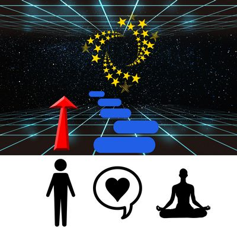 |
|
肉体１つの成長で他の２つも変わる
感情、精神を変えようとするより、肉体を変える方は数値化ができて管理がしやすい。 |
２
健康的な食べ物が人間の基礎を作る
■ 水は最強の味方
人間の構成要素の６０～６６％は水です。
あなたを構成する最大要素であることからも、身体に入れる水は最重要です。
自分の飲む水は慎重に選んでください。
おススメはエビアンです。
エビアンは硬水で、日本の水の軟水とは違い、口当たりに違和感を持たれる方もいるかもしれません。
ですが、エビアンはミネラル分が比較的豊富で、現代の食事で不足気味なミネラルが補えるのでお勧めです。
料理に使うのではなく、水分補給に使ってください。
また、水分は補給の量とタイミングも重要です。
水は１日２リットルとってください。
もちろん、健康上の理由で量をとれないかたは医師の診断に従ってください。
水分補給は、必ず朝起きた後に水を飲んでください。
これは夜寝ているときに汗で水分が失われた分を取り戻すためです。
５００ミリリットル以上は確実にとってください。
生活上で体を動かす必要があるのであれば、その行動の前にも水分をとってください。
のどが渇いたといわれる状態だと水分補給のタイミングは遅いので、注意が必要です。
水に良い言葉をかけると、その水で植物がよく育つということを知っている人もいると思います。
例えば、「サンキュー」や「アイラブユー」などの言葉を毎日かけた水と、悪い言葉をかけた水だと植物の生育状況が変わってきます。
これが人間にも起きるのです。
水は身体を構成する物質の中でも６割以上と大きな割合を占めるものです。
その水と常に一緒にいる自分自身の言葉に一番影響を受けています。
良い言葉をかければ健康にとって良い体になり、悪い言葉をかければ健康にとって良くない状態に向かいます。
自分自身にポジティブな良い言葉をかける
このことが大事になってきます。
■ この脂質に対する誤解のうち、あなたはどれに騙されていますか？
あなたは脂肪について、次のように考えていませんか？
・脂肪は心臓病の原因になる
・体脂肪は増えるのは、脂質、脂肪を身体に入れるから
・脂肪を食べると太る
これらはすべて間違いです。
まず脂質、脂肪とは何なのかについてお伝えていきます。
栄養学上の脂質というのは水に溶けない物質の総称で、身体に必要な物質です。
体内では、脳や体のエネルギー、ホルモン・細胞膜の材料、体温調節、などの働きをする物質として活躍します。
そして、脂肪は栄養学の中の三大栄養素の一つとして分類されていて、体に必要な栄養素として必要なものです。
これは脂肪は身体の栄養だからです。
脂肪を体内に入れ消化されることで、脂質として、身体のエネルギーとなったり、細胞やホルモンの材料になるからです。
脂肪は心臓病の原因にはなりません
約半世紀前、アンセル・キースという科学者が飽和脂肪酸は心臓病の原因になるという研究を発表したことに端を発しています。
これは今では否定されている研究結果です。
人間の脳、細胞、臓器は脂肪で出来ているため、最適な働きをするには脂肪の摂取が必要です。
脂肪を食べるとコレステロールが気になる方もいらっしゃいますが、必ずしもコレステロールは悪いものではありません。
ホルモン、ビタミンＤの成分、腸内の胆汁の成分でもあるため、人体には必要な物質です。
脂肪を食べると太るということはありません
イギリスのＳａｍ Ｆｅｌｔｈａｍ氏が、２１日間毎日５０００キロカロリーを摂取した実験があります。
その２１日間は、卵、肉、魚、ナッツ、緑黄色野菜、ココナッツオイルだけの生活をしていました。
炭水化物はできるだけ食べないようにする生活で、そのときの栄養素の内訳は、炭水化物１０％、タンパク質３７％、脂肪５３％のカロリー配分でした。
結果、体重は１．３キロ増加したもののお腹周りのサイズは３センチダウンしました。
その後の２１日間毎日同じ５０００キロカロリーを栄養学で言われている炭水化物６０％、タンパク質２０％、脂肪２０％の生活にしました。
その結果は体重は７キロ増加、お腹周りのサイズは９センチアップとなりました。
何が言いたいかというと、
炭水化物が体重を増やす主犯
です。
５０００キロカロリーの食事なので、量はとても多いことからも体重は増えることは予想できます。
しかしながら、実際は脂肪よりも炭水化物の方が体重増加の効果が大きいことがわかります。
世の中では低脂肪食品が売られていますが、それらを食べることよりも炭水化物をカットして、脂肪をとるようにした方がよいでしょう。
では脂肪はどのようなものをとるのが良いのかについてお伝えしていきます。
次の表以外の脂肪、油はあまり良いものではないのでご注意ください。
| 食品 | 理由 |
| グラスフェッドバター (牧草牛バター) |
牧草牛のバターはビタミンＡ、Ｄ、Ｅ、Ｋの脂溶性ビタミン、抗酸化物質をたっぷり含んでいます。 |
| ＭＣＴオイル | 脳のエネルギーとなるケトン体になり、睡眠時の体脂肪燃焼補助効果があります。寝る前に小さじ２杯とるとよいでしょう。 |
| ココナッツオイル | 飽和脂肪酸が含まれていて、加熱調理で使うことができます。中鎖脂肪酸が脳機能を高めて、ケトン体の生成を増やし、体脂肪を減らす働きをします。 |
| 魚油 | ＤＨＡ(ドコサヘキサエン酸)が多く含まれています。良い睡眠に効果があります。ストレスレベルを減らします。気分を良くするなど精神的な効果が高いです。 |
| ギー | 食用バターオイルのこと。水分、タンパク質、バターの持つ乳酸とカゼインが除去されています。グラスフェッドバターより効果が高いです。 |
| クリアオイル | オメガ３脂肪酸が心臓血管の健康を改善し、炎症も改善し、がんリスクを低減します。睡眠の質を良くしたい方はこちらを。カロテロイド系のアスタキサンチンが豊富に含まれていて抗酸化物質としてもよいでしょう。高級ブランドのみ。 |
| カカオバター | 飽和脂肪酸と一価不飽和脂肪酸が豊富な植物性脂肪で、ポリフェノールと抗酸化物質が血圧改善、心臓血管の状態を良くする効果があります。良質なものだけ。 |
| オリーブオイル | 良質なもののみ。加熱すると酸化してしまうため生専用。 |
説明欄の用語がわからないという方は、次の説明をご確認ください。
| 用語 | 説明 |
| 酸化 | タンパク質と糖質が結びつく化学反応。タンパク質の劣化したもの。身体のサビと表現されたりもします。物質の酸化したものを食べるのは、老化につながるため、避けた方がよいでしょう。 |
| 抗酸化物質 | 酸素が関与する酸化を防ぐ物質。カロテロイド、ポリフェノール、ビタミンＡ、Ｅ、Ｃなどに含まれています。バナナ、にんにく、キャベツ、しょうが、ニンジン、セロリ、玉ねぎ、豆腐、レモンなどが代表的な食べ物に当たります。 |
| ケトン体 | 脳のエネルギーとなる物質。肝臓で作られます。中鎖脂肪酸がこの肝臓の働きを助けます。 |
| 飽和脂肪酸 | 脂質のエネルギーの主なもの。バターなどに多く含まれています。この「飽和脂肪酸が含まれているものは心臓に負担をかける」と長い間国際的な定説とされてきたが、現代では否定されています。常温で固まりやすいので注意。 |
| 中鎖脂肪酸 | 飽和脂肪酸の中の１つ。脳、肝臓の働きを助けます。ホルモンの材料となり、体脂肪減少にも効果があります。 |
| オメガ３脂肪酸 | 人間の体では合成できず、外からとらなければいけない不飽和脂肪酸の中の１つ。必須脂肪酸のうちの１つでＤＨＡなどが代表的なもの。 |
| ＤＨＡ | ドコサヘキサエン酸。魚の脂肪に含まれる脂肪酸。人間の脳の５％はＤＨＡ。血管の状態を改善し、脳の働きに良い効果があります。 |
| カロテロイド | 細胞を酸化から守る抗酸化物質。活性酸素が細胞に悪影響を及ぼすのを防ぎます。黄色、赤色の色素をもちます。血流を改善するリコピン、生活習慣病予防のカプサイシンなどがあります。 |
| アスタキサンチン | カロテロイドの１つ。眼精疲労予防、睡眠改善に効果あり。魚の脂肪、魚油をとると良いでしょう。 |
| ポリフェノール | 植物食品に含まれる成分。抗酸化力があり、紫外線から細胞を守り、細胞を作り出す働きをします。体脂肪減にも効果あり。５００種類以上あり、赤ワイン、緑茶カテキン、そばのルチン、コーヒー、カカオにも含まれています。 |
■ 三大栄養素タンパク質の落とし穴
タンパク質。
栄養学で言われる三大栄養素の１つ。
なので、タンパク質は身体にいいという３段論法で単純に考えると気付かない部分が出てきます。
タンパク質は確かに体にいいのですが、それは質の良いタンパク質をとると・・・という条件があります
世の中には質の良いタンパク質と質の悪いタンパク質がある
ということです。
タンパク質というのは、水分調節、筋肉量調整、骨密度維持、血液循環や食欲、老化防止にも関係します。
髪の毛や皮膚、血管、爪などもタンパク質からなります。
必ず必要な栄養素ではあるのですが、質の悪いものをとると適切な消化ができず、体内の炎症の原因にもなります。
健康のレベルを上げるには筋肉はあった方がよいので、筋肉をつけるタンパク質はとても重要です。
特に必要な人は、加齢による筋肉の減少が起きている人、ダイエットしたい人です。
もちろんアスリートやボディビルダーにとっても重要ですが、ここでは普段の生活で使用できる一般的な知識に絞り、ご紹介していきます。
| タンパク質 | 食品 |
| 質の悪いもの | 穀物で育てられた牛、豚、鶏などの肉、養殖魚、大豆、豆類 |
| 質の良いもの | 低水銀の天然魚、放し飼い鶏卵 |
○ 質の悪いタンパク質
穀物で育てられた牛、豚、鶏などの肉は質が悪いので避けてください。
なぜかと言うと、こういう肉は工場内で生産されたものです。
遺伝子組み換え飼料、家畜の死骸、ジャンクフード、安い穀物を与えられて生産されたものです。
食品によっては、抗生物質、ホルモンを投与された生産物です。
太らせて成長を早めるためにこういった物質を投与されます。
これらの肉は工場で出来た工業製品だと考えてください。
養殖の魚に関しては、栄養価が天然の魚に比べ低く、人の近くにいるためか水銀が内在する量も多く汚染されていることもあり、おススメすることは難しいです。
大豆は高濃度のヒスタミンを含んでいることもあります。
ヒスタミンは魚のイメージがありますが、大豆にも含まれています。
ヒスタミンは食中毒を引き起こします。
ファセオリンという物質がダイエット効果があると言われ、いんげん豆が流行りましたが、胃腸の不調につながりますので、摂取には注意が必要です。
そして、レクチンです。
レクチンはタンパク質の一種で、関節痛や頭痛の原因になります。
腸に穴をあけてしまうリーキガット症候群の原因とも言われています。
レクチンの大量摂取により場合によっては、血糖値が下がらない状態つまりインシュリンが効かない状態になり、Ⅱ型糖尿病の原因となります。
さらに心臓病、慢性疲労、アレルギー、認知症、感染病になりやすい、偏頭痛、頭痛、胃腸疾患、自閉症、ガンの原因になりうるので注意が必要です。
レクチンは小麦、穀類、大豆、豆類、コーン、ナッツ系に多く含まれています。
発酵大豆(納豆など)に関しては、レクチンが激減しています。
ただしレクチンが完全に０ではないことに留意してください。
大豆は、腸内細菌であるプロバイオティクスがあるため腸にとってはメリットもあります。
しかし、摂り過ぎは禁物で植物性エストロゲンなどを体内に取り込んでしまうために、バランスよくとることが重要です。
植物性イソフラボンはホルモン異常を引き起こし、体内のホルモンバランスを狂わせます。
植物性イソフラボンはエストロゲンという女性ホルモンなので、女性にとっていいという話もあります。
しかし、男性と子供にとってはホルモンバランスを狂わすので注意が必要です。
そして、甲状腺にも悪影響を及ぼします。
大豆タンパクはアレルギーの原因物質であり、日本人の３大アレルゲンの１つです。
またアメリカでは大豆に関しては遺伝子組み換え作物が多く、ガンの原因とされています。
豆類に関しては炭水化物が多く含まれていることもあり、ダイエットには向かないこともあります。
豆類は消化不良を起こしやすく、腸内ガスもたまり、腸の健康を阻害してしまいます。
○ 質の良いタンパク質
低水銀の天然魚は抗酸化物質、身体に必要な脂肪が含まれているので、積極的に食べるとよいでしょう。
シャケ、マス、イワシ、カレイ、ヒラメがおススメです。
鶏は穀物を食べる生物ですが、卵には影響がでないため、肉より卵が質が良かったりします。
放し飼い鶏卵は抗酸化物質と、ビタミンＡ、Ｅ、オメガ３脂肪が含まれています。
工場で育てられた鶏卵は栄養価が少ないため、放し飼いを選びます。
タンパク質をとるために肉という方もいらっしゃると思います。
鶏肉に関しては、穀物を食べていないものに関しては質がよいですが、なかなか見かけることはありません。
豚肉も放牧されている豚はあまりおらず、放牧豚肉を普通のスーパーマーケットで見かけることはないでしょう。
まとめると、タンパク質には質の良いものと悪いものがあります。
質の良いものを選んで健康に気を付けていくことが大切だということです。
■ 肉体的精神的にダメージを受ける食べ物
肉体と精神に大きいダメージを与えてしまう食べ物があります。
現代の日本で生きていると日頃から良く口にする食べ物だといっていいと思います。
それは白砂糖を含む食品と小麦です。
○ 白砂糖
白砂糖は体の不調の原因となります。
白砂糖が原因の体の不調例をいくつか挙げると、栄養がない、血液を酸性にする、身体のカルシウムが奪われる、体を冷やす、体の抵抗力を下げる、血糖値を急上昇させる(肥満につながる)、中毒性がある、などがあります。
白砂糖とはサトウキビ、ビートから精製された糖質の一種です。
白砂糖は精製される際にミネラルとビタミンを削ぎ落されています。
精製過程で苛性ソーダと硫酸という劇薬を使っています。
自然界にあるサトウキビ、ビートから人工的に作ったものが白砂糖になります。
漂白され、栄養素を失い、身体を酸性にする食べ物になっています。
白砂糖が体内に入ると血液を酸性にします。
人間の体は弱アルカリ性であるため、身体は中和して元に戻そうとします。
中和の際に使われるのがカルシウムになります。
必要なカルシウムは骨や歯を溶かして使用されます。
聞いたことありませんか？
「白砂糖は骨を溶かす」というフレーズ。
骨が弱くなる原因や虫歯の原因が甘いものと言われるのは、食べる時点で歯が溶けるからだと考えられています。
次に、白砂糖は身体を冷やします。
体の冷えは万病の元。
冷えは体の抵抗力を奪います。
さらに、白砂糖は女性にとっては大敵です。
摂り過ぎると婦人科系の疾患にもつながります。
(白砂糖が引き起こす婦人科系疾患例)
・子宮や卵巣の発育不良、流産や早産の原因にもなる
・子供のアレルギーの原因 (アトピーなども)
・生理不順が起こりやすい
・不妊になりやすい
これらを引き起こさないためにも白砂糖を含む食品を食べることに注意してください。
そして、白砂糖を含む食品は、血糖値を急上昇させてしまいます。
血糖というのは脳の活動エネルギーになるのですが、血糖は臓器や血管にとって負担になってしまいます。
血糖をそのままにしておくと臓器や血糖を腐食させてしまうため、膵臓からインシュリンが分泌されることになります。
インシュリンは体脂肪細胞にブドウ糖を詰め込むわけです。
これが太るという化学反応になります。
糖質は主にお腹周りの脂肪になります。
最後に、白砂糖を含む食べ物は中毒性があります。
ピンとこないかもしれませんが、ひとたび食べるとまた食べたくなるのです。
なぜこの中毒性が起きるのかについて説明していきます。
白砂糖を含む食べ物を食べると脳が快感物質であるドーパミンを分泌します。
食べた後眠くなる、集中力が欠けている、感情のコントロールが難しい、などが起きているときは既に中毒になっているかもしれません。
これは麻薬のように緊急な危険はないものの、強い中毒性を持っていて徐々に体を蝕んでいる可能性のことを言っています。
問題は
本人が中毒だと自覚していないこと
法律で禁止されているわけではない
という点です。
白砂糖を含む食べ物を食べると「何か元気が出る」「おいしい」という感情が沸きませんか？
それは脳内の報酬系の神経が刺激されているということです。
報酬としてドーパミンが出ていて、快感の感情が沸いているのですが、食べてからしばらく経つと血糖値が下がり、それと共に感情も落ちていきます。
そしてまた白砂糖を含む食べ物を食べて快感を感じるのです。
白砂糖を含む食べ物を食べる習慣ができ、行き過ぎると過剰摂取となり、肥満になるだけでなく精神的にも影響が出ます。
その精神的な影響の一例をあげると不安、イライラ、焦り、集中力の欠如、攻撃的な行動などを指します。
血糖値の激しい上下動が心身の不安定につながると言われています。
どうすればよいのかというと白砂糖には依存性があるということを知ること、白砂糖を含む食べ物を食べるのをやめてしまうことです。
中毒状態にある人にとっては抵抗のある考え方だということは理解しています。
しかし、白砂糖を含む食品を食べるのを極力控えるだけでも、精神状態をよくするということにつながります。
あなたの精神状態は食べているものに影響されていることを自覚して、まずは少しずつ少しずつやめていくことを願っています。
○ 小麦
お腹周りについている脂肪は言い換えると内臓脂肪ですが、小麦も血糖値を急に素早く上げるため、お腹周りにつく脂肪になり得ます。
なぜかというと、人体の空腹の仕組みにあります。
空腹とは、
前の食事の血糖値を元に戻そうとする働き
のことです。
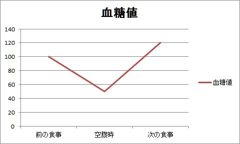
空腹の仕組みについて、説明します。
前の食事の血糖値は、身体や脳のエネルギーや体脂肪として蓄えることを経て、時間と共に減少していきます。
血糖値が減少すると、脳はエネルギーが足りなくなることを恐れて、お腹を鳴らしたりして空腹感を出します。
これが空腹の仕組みです。
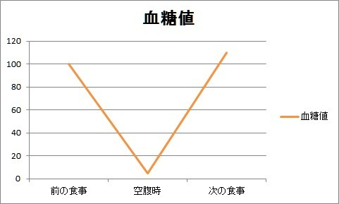
小麦を食べると、この血糖値が短時間で急上昇急降下します。
この図のように傾きが急だと空腹感もきついということです。
急激に血糖値が下がるということは、インシュリンが血糖を体脂肪細胞に詰め込む作業が急速に行われていることになります。
これは体脂肪細胞が急激に増えるという意味です。
例えるなら、インシュリンというたくさんのパティシエがフワフワサックサクのシュークリームに血糖というクリームを急ピッチでニュルニュルと入れるということです。
小麦、正確に言うと小麦グルテンはこのように太るという効果をもたらします。
自信という観点から言うと、体型がスリムでシルエットが良く見えた方が自分に自信が持てます。
そして、見た目が評価を決めることも多い現代では、なおさらこの太るということに対しては敏感に対応してもよいと考えられます。
また小麦には依存症状があります。
パン、パスタ、ラーメン・・・これらに依存している人がとても多いのです。
小麦はエクサルフィンという脳内麻薬に似た物質による脳を昂ぶらせる作用、いわゆるハイにすることが言われています。
このエクサルフィンには依存性があります。
食後、脳をハイにさせ、エクサルフィンの濃度が減ると、またこのエクサルフィンを求めるために、パン、パスタ、ラーメンが食べたくなるという仕組みです。
こうして、小麦を含む食べ物に依存していきます。小麦グルテン食品に依存している人はぜひ食べるのをやめてください。
完全に小麦食品を食べるのを止めると、数日から２、３週間小麦食品を食べたくなってしまうと思います。
その間は思考力は減り、疲労感、イライラ、憂鬱感を覚えるでしょうが、ここは辛抱するところです。
人は習慣から外れると必ず悪い感情を覚えますが、習慣が悪いものであればその流れを断ち切るためにこの辛抱が必要になってきます。
コカインなどの麻薬と同じように、小麦は中枢神経に影響を及ぼしているため、一時的な精神的高揚状態と、精神的な不安定さの原因となります。
現代は世界中至る所でこの小麦グルテン食品を食べることができます。
ありふれ過ぎて信じられないと思うのも無理はありません。
小麦を完全に断ち、依存症状から脱した後は、お肌のトラブルは消え、老化現象も緩やかになり、血糖値も改善し、口内炎なども回復に向かいます。
精神状態も健康になり、日々快活に過ごせます。
自信は健康状態から作るのが近道という話は前述した通りです。
うつうつとした状態から脱却したいのであれば、まずは食事です。
一番の改善ポイント、それは白砂糖と小麦食品を日々の食卓から取り除くことです。
ぜひ試してください。
３
自分のことがキライ・・・そんなときに
■ 気持ちの切り替えをするとき、こんな間違いをしていませんか？
第１章でも触れましたが、気持ちの切り替えをするとき、こう考えていたりしませんか？
「よし気持ちを切り替えよう」
気持ちを根性や気合で何とかするのはかなり難しいです。
気持ち、精神状態を変えるには肉体にアプローチするという話をしましたが、この気持ちの切り替えをするときにも肉体にアプローチするのです。
肉体にアプローチして気持ちを切り替える方法、それは
呼吸の質を高めること
です。
呼吸という肉体を活かす行動で精神状態を変えようということです。
なぜ呼吸が大事なのでしょうか。
まず、そのことについてお話していきます。
呼吸を普段、意識しない場合は１分間に１５回から１８回ほどと言われています。
その呼吸に私たちの心と体は深く影響されているのです。
自信がない、不安、そういった気持ちに直接アプローチするのではなく、食事や呼吸を変えることで、そういうメンタルの問題に取り組もうというものです。
直接、人間の心、精神を変えよう何とかしようとすると、一時的になりがちです。
一時的に高揚して気分が高まっても、心は常に変わり、元に戻りがちになります。
目に見えないもの、移ろいやすいものは人間は管理することが難しいのです。
ですが、数値化できるものは管理しやすいのです。
体重、心拍数、体脂肪率、呼吸回数など肉体に関しては数字で表すことができるものが多いのです。
肉体と精神、つまり心はつながっていて、肉体が成長すると精神や感情も一緒に引っ張られて成長します。
自信がない、不安という気持ち、感情が落ち着かない。
それらの気持ちに対処するために、より健康的な肉体作りをしようということです。
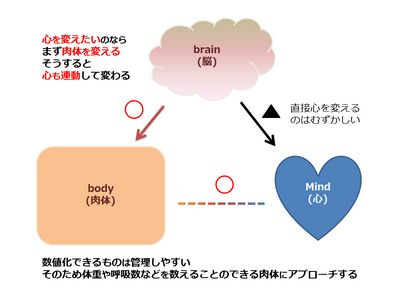
肉体へのアプローチのひとつ、呼吸。
そして、その呼吸は精神状態と関係があり、
呼吸の質は心理状態、精神状態に直結します。
この呼吸の質が低いと、心理的に不安定になります。
呼吸の質の低い状態というのは単純に呼吸が浅い状態のことをいい、肥満傾向になり、自律神経の働きがより弱くなる状態なので注意が必要です。
身体的に表現するならば、肺の一部にしか空気が入っていない状態で、肩や胸の一部で呼吸している状態だと言えます。
この状態だと心身にとって良くないため、呼吸の質を改善しようというの主旨です。
これからその方法を具体的にお伝えしていきます。
良い呼吸とは、背筋を伸ばし、ゆったりとした深い呼吸のこと
を言います。
質の低い呼吸から質の高い呼吸に変えると、より多くの酸素が出入りしてリフレッシュすることになります。
質の高い呼吸があなたの気持ちを切り替えるのです。
呼吸を深くすると、約５％前後呼吸量が変わると言われています。
これは１時間の呼吸量がそのまま増加したのと同じものです。
体内に取り込まれる酸素量やリフレッシュ効果も呼吸を変えることで１時間分まるまる増加されることになります。
そのため呼吸を深くすることを意識するだけでも、心身ともによりよく変わってきます。
呼吸を正せば姿勢が良くなり、精神状態も良くなります。
精神状態がよいときは呼吸もよくなるという好循環になります。
この循環は呼吸から始まります。
すべては呼吸からです。
自信を深めるために、まずは呼吸を変えていきましょう。
そして、
呼吸をただ深くするだけではなく、エネルギーを入れるように呼吸をしていきましょう。
これはどういうことかというと、深い呼吸をするとき意識を込めるのです。
良い気持ちの「気持ちいいなー」などを息を吸い込むときに入れ、「あいつ腹立つなー」というような悪い感情を出すという気持ちで行ってください。
エネルギーは頭や肺の高さではなく、肚(腹)の高さまで落とす意識を持ってください。
すぐに意識が別のところにいくとは思いますが、気付いたら元に戻して良い気持ちを入れて悪い気持ちを吐く、深呼吸をしながら続けてください。
これを最低でも１０分は続けてください。
呼吸には胸式呼吸と腹式呼吸があります。
胸式呼吸とは肋骨の開閉による呼吸のことです。
腹式呼吸とはお腹が前後に動き、お腹に空気が入ったように膨らむ呼吸です。
腹式呼吸は正確には横隔膜が上下に動き、内臓にマッサージするように呼吸するため、身体にとって良いとされています。
呼吸は息を吐き出すことから始めてください。
なぜ吐くことからかというと、まずは身体をゆるめて心の状態を落ち着けることから始めるためです。
無意識で呼吸をしているときは肺の最大容量の１０分の１から６分の１しか使っていないと言われています。
肺の最大呼吸容量を大きく使うと、精神的な面で生活の質が大きく向上します。
１日の中で１０分でもこの肺の最大呼吸容量を使うように生活すると、精神面の改善が図れます。
ぜひ実行してみてください。
■ あなたを最高の状態にするエンパワーメソッド
ご存知のとおり、呼吸で精神状態を変えることができます。
人間は良い空気を質の高い呼吸で取り込み、良い食事を質の高い食べ物で取り込む、それだけで心は穏やかに精神状態は軽やかに生きていくことができます。
ここでは、あなたを最高の状態にする呼吸法エンパワーメソッドについて具体的にどのようにしていけばよいのか説明していきます。
この表を見て、このエンパワーメソッドを早朝に３分間続けてください。
鼻から４秒で息を吸い、４秒間息を止め、４秒で口から息を吐く、４秒待つ。
その繰り返しイメージで進めてください。
| あなたを最高の状態にするエンパワーメソッド - ステップ | |
| 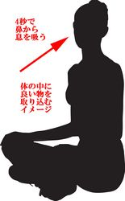 |
１ 息を吸う
まずは図のようにあぐらをかいて座ります。４秒間かけて鼻からお腹を膨らませるように呼吸します。 |
| 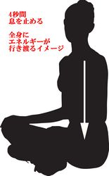 |
２ 息を止める
吸い切ったら、４秒間息を止めます。そのとき全身に栄養とエネルギーが行き渡って、体中に満ちあふれるイメージをします。心臓の鼓動に合わせてエネルギーが行き渡るイメージです。 |
| 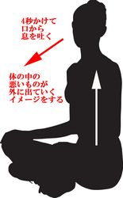 |
３ 息を吐く
口から息を４秒かけて出していきます。心と体の中の余計なもの、あなたを邪魔しているものが息とともに出ていくイメージをします。 |
| 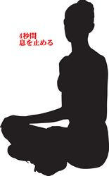 |
４ 待つ
４秒間息を止めて待ちます。１から４を繰り返します。 |
■ イキイキと健康的な人生を生きるためのアクション
まず肉体を成長させると、感情や精神が一緒に連動して変わっていきます。
肉体を成長させる、簡単に言うとより健康になる、呼吸に気を付ける、そのほかにもう１つ
運動・トレーニング
があります。
もともと人間は大昔狩りをして生きてきました。
現代では筋力をつけなくても生きていけます。
ですが、人間としての肉体、感情、精神が疎かになっていっている、それが現代人です。
肉体を成長させることで感情、精神を成長させる、それを念頭に置いた上で、運動について説明していきます。
運動については、動画で説明していきます。
次の表から確認していただけたらと思います。
| ＃ | トレーニングメニュー | アドレス |
| １ | スクワット | https://youtu.be/-Ze8oWKc66s |
| ２ | 背筋 | https://youtu.be/cpgWxl4MPns |
| ３ | 腹筋 (バイシクル) | https://youtu.be/64DU3v6S4DI |
| ４ | フロントプランク | https://youtu.be/LYJKXq7xHKE |
| ５ | サイドブリッジ | https://youtu.be/DhIzsOso2KU |
| ６ | モモあげフロントプランク | https://youtu.be/zVoGrco9Wgs |
| ７ | バランスフロントプランク | https://youtu.be/xdnNF1goBIE |
| ８ | バッククロスクランチ | https://youtu.be/0J7qpRhRLsc |
| ９ | スイング ー 足回しサイドブリッジ | https://youtu.be/YsmtqB9yCDg |
| １０ | 腕立てフロントプランク | https://youtu.be/DVIDyGjYepc |
| １１ | 足上げサイドブリッジ | https://youtu.be/DpU4QXQgG34 |
| １２ | サーキットトレーニング | https://youtu.be/VStpI752Xe8 |
運動に慣れていない人は、まずは運動に身体を慣れさせるメニューから始めるとよいでしょう。
具体的には＃１～５を慣れるまで続けると良いでしょう。
＃６以降は少しきついメニューとなります。
肉体作りには、トレーニングすることも重要ですが、休息も必要です。
呼吸の質を上げることを意識した生活をし、睡眠は８時間は確保することが望ましいです。
筋力トレーニングは基本的には身体を緊張し固めるアクションになります。
これの反対の体をゆるめるということも重要です。
身体の固めるとゆるめるのバランスをとりましょう。
身体を固める筋トレだけだとバランスが悪いため、カイロプラクティック、リンパマッサージ、リフレクソロジー、足つぼ、サウナなど体をゆるめることも生活の中に取り入れられるとベストです。
ここで挙げたものは月に１度どれかを実践できればよいでしょう。
これらができない場合は、何かあなた自身がリラックスできることを心掛けて取り組んでください。
■ モチベーションがなくても行動する方法
ここでは肉体へのアプローチが終わり、精神状態、感情もよりよく変わったとして、お話していきます。
ここまで精神状態、感情を変えるには、まず肉体にアプローチするということをお伝えしました。
具体的なアプローチとしては３つの方法があり、食事、呼吸、そして運動です。
この肉体へのアプローチから、自信を得ることやよりよい感情でいることに繫げていきます。
そして、その先に行きましょう。
その先に行くにはどうしたらいいか？
環境を変えることです。
あなたを作ったのは環境です。
あなたに "あなたの考え方をインストールさせた" のは、あなたがいた環境です。
あなたがいる場所で、あなたの周囲にいる人たちから良くも悪くも影響を受けてきました。
置かれた環境が人から自信を奪い、不安、イライラ、うつうつとした気持ち、そういう感情に至る考え方を植え付けてきました。
親、家族、友人、社会、学校、会社・・・、それぞれを恨んでも仕方がありません。
彼らは彼らなりにベストを尽くしているとして、まずは自分を変える のです。
心身ともに健康になったあとは、環境を変えるために行動することが大切 です。
決意して一歩踏み込むこと、恐怖感が出るかもしれませんが、環境が変わらないことには運命が変わらないのです。
どこでもいいから別の場所に行こうとするのではなく、あなたが納得するところに行く必要があります。
自信という土台の上に置く信念を持ってください。
あなたがどういう環境に進むのかはわかりませんが、得られるものは必ずあります。
環境を変えて、新しい自分になれるようにチャレンジすることは、自分自身の成長や社会的な安定、自由や楽しい状況を自分自身の手で作り出すことにつながります。
具体的なアクションプランとしては、次の通りとなります。
各々が置かれている状況に応じて、ある程度読み替えてください。
| モチベーションがなくても行動する方法 - ステップ |
１． 新しい大きい挑戦することを決める。 ２． 環境を変える時期を決める。(引っ越す、会社を辞めるなど) ３． 人間関係を整理する。 ４． 新しい挑戦の世界に飛び込む。 |
新しい大きな挑戦はあなたを成長させます。
心身ともに健康ならばチャレンジの意欲もわき、少々のことにはブレずに行動できます。
不安定な場所はあなたに生きている実感をわかせ、そして本当の自分の人生が始まります。
新しくて大きな挑戦を決めるコツは、ワクワクすること、好きなこと・情熱が持てるモノから選んでください。
そのワクワクをすることで生活ができたり、人生の質が上がると思うものにしてください。
例えば、アジアで就職して海外生活ということにワクワクするのであれば、それを目標にしてください。
好きなことと言ってもゲームや漫画を読むなどにすると、生産性がなくなり社会的に生活できないのでこういったものを選ばないようにしてください。
また、ワクワクするもの以外のことをしようとすると意志の力が必要になり、モチベーションを上げるのにものすごく苦労します。
ワクワクするものだけにしてください。
新しい挑戦がすぐに見つからない場合であったとしても、探すことを諦めないで ください。
新しい挑戦を見つける方法があります。
それは、
「私の情熱が持てるモノは何だろう？」と常に頭で問いかける
ことです。
なぜこの問いかけを行うかというと、人間の脳には自問したものは必ず答えを出そうとする仕組みがあるからです。
落ち込む必要も焦る必要もまったくありません。
情熱が持てるワクワクするものは必ず見つかります。
私自身はやりたいことが見つからないまま生きてきました。
でもこの方法で見つけることができたため、その経験からこのようにお伝えしています。
挑戦する内容は何でもいいですが、今までの自分では到底考えられない大きいもの にしてください。
考えられないほど大きな挑戦はあなたを不安定にします。
それでも不安定さがあなたを大きく飛躍的に成長させ、あなたの人生をよりよく変えていきます。
人生は安定しないものです。
なぜなら、人のご縁、信頼関係と健康は計画できないことだからです。
不安を避けたい気持ちもわかりますが、人生は変化の連続であることを頭に入れて行動すると不確定要素に対応しやすいです。
そして、
安心してください。
最初は自信がなくても大丈夫なんです。
最初から自信を持って進める人もいるでしょう。
もしあなたがそうでなくても、気にしないでください。
根拠のない自信で大丈夫です。
例えば「オレは海外で起業し、成功する」というものならば、起業する自信なんてなくてもいいのです。>
逆に根拠のある自信があったら大変です。
例えば「英語も中国語も話せるし、経営も勉強したから、オレは自信がある」というような根拠のある自信は、自分よりレベルが高い人が現れた瞬間に自信がポッキリと折れかねません。
"自信があるとかないとかは妄想" ぐらいの気持ちで、挑戦の世界に飛び込むことが重要です。
他にも、あなたの中で挑戦ができない言い訳はたくさん出てきますが、それはすべて妄想であり、あなたが本当に挑戦するかどうかを試されているだけです。
例えば、「今は英語が話せないから海外移住は無理」という言い訳が出てきたとしても、ないスキルは身につければいいのです。
「パートナーが理解しないから挑戦できない」という言い訳も、とことん話し合う、自分だけ単身で挑戦するなど、解決方法はあります。
現状はどうあれ、すべての問題には解決策があるという姿勢で取り組む と、解決に向けて前を向いて歩くことができます。
まずはビックリするぐらい大きい挑戦、ワクワクするチャレンジの内容を決めてください。
あなたの現状がどうであれ、自分が映画の主人公になりきって、山あり谷ありのサクセスムービーを自分の中で作り上げてください。
その内容は、どん底の谷からはい上がるミラクルストーリー です。
次に、
環境を変える時期を決めてください。
思い立ったが吉日という言葉もありますが、状況によってはそうもいかないこともあるでしょう。
気持ちが冷めないよう、なるべく早い時期にチャレンジしてください。
そして、
人間関係を整理してください。
なぜ人間関係を整理するのかというと、人間の脳にはミラーニューロンというものがあります。
これは通称ものまね細胞と呼ばれるもので、このものまね細胞はあなたの近くにいる人のものまねをする細胞です。
人間は行動だけではなく、考え方、しゃべり方、行動パターン、精神状況まで無意識化でものまねし始めます。
例えば感情の波が激しい人の近くにいると自分も感情の波が激しくなります。
このミラーニューロンというものまね細胞を利用して、あなたがなりたい人の近くにいるようにしてください。
例えば自信をつけたい人であれば自信満々な人の近くに行く、ビジネスで成功したいのであれば既にビジネスで成功している人の近くに行く、笑顔が素敵な人になりたいのであれば今笑顔が素敵な人のところに行ってください。
挑戦するに当たり人間関係は変わってくる可能性は高いです。
積極的に縁を切る必要まではないと思いますが、疎遠になることに躊躇しないでください。
挑戦するあなたを否定する人もいます。
例えば、
「そんなの絶対成功しないよー」
「年齢考えたら？」
「そんなことしているひといないよー？」
「無理無理」
など、あなたの挑戦を否定する言葉を言う人のことです。
そういう人からは離れてください。
あなたの挑戦を応援してくれる人、後押ししてくれる人、既に似たような挑戦に成功した人と一緒にいるようにしてください。
そして、
あなたのあなただけの挑戦をしてください。
ワクワクするチャレンジの中を生きていく、これが楽しい人生を生きる秘訣です。
人間関係と環境をより良い方向に変えていくことができれば、あなたの人生が変わります。
例えば、ビジネスで成功したいのであれば、もう既に成功している人の輪の中に飛び込んでください。
ビジネスで成功している状態が自然な人の中に居れば、ミラーニューロンという脳の仕組みにより、自然とビジネスで成功する行動をとることができます。
ワクワクすることを定めて、そのチャレンジを決めて、チャレンジの連続を生き切る人生。
言い換えるならばモチベーションがあるなしに関わらず、勝手にワクワクして行動してしまう人生です。
繰り返しますが、
達成できる根拠なしで大丈夫
挑戦できない言い訳は妄想
クリスマスプレゼントを楽しみにする子供の様に生きていく。
そんなイメージを持ちながら楽しく人生を進んでほしいと思います。
■ ストレスに悩み、日々がんばっているあなたへ
現代の日本に生きていると、ストレスがたまることは多いです。
憲法で労働を規定され、お金がないと何もできない国。
そのお金のために行動が縛られ、我慢を強いられることも多いです。
私は途上国に住んでいたことがあります。
１日１ドル程度で生活する人たちとの交流もありました。
彼らは最高の笑顔で毎日楽しく過ごしていました。
家族はいつも一緒で、隣近所の人達とも仲良く助け合って暮らしていました。
一方日本は、両親共働きで子供たちをほったらかしにしていることも多いです。
残業してまで貯めたお金は、良いとは言えない住環境、身体に悪い人工的な食べ物などに使われています。
物はあふれかえっているのに、人々の心は満たされていないようです。
ある親が子どもを虐待し、子どもは他の子どもをいじめるというような話も多く耳にする社会。
自殺は毎年３万人とも言われている社会です。
その社会を変えろとは言いませんが、良い距離感を保って影響され過ぎないように生きていくことをおススメします。
前述したミラーニューロン、近くにいる人のものまねをする脳細胞のこともあります。
あなたをつらい目に合わせる環境からは離脱してください。
世界には何もなくても笑える人たちもいます。
不便でもお金がなくても彼らは良い人間関係を築いていて、幸せです。
でもここで、お金がないから不幸というようなことを考えるのは少し待ってください。
その考え方も日本で生きてきた上で身につけた考え方です。
誰か他の人の考えなのです。
その他の人はあなたに無意識のうちに植え込んだのです。
そのようなものに振り回されないでください。
縛られないでください。
あなたに何かの考えを埋め込んだ人は、あなたの人生に何が起きようと責任はとりません。
あなたの考え方を作ったのは良くも悪くも、あなたを中心とした周囲の人々です。
誰もが考えを埋め込もうなどと思わずに接しています。
「お前は頭が悪い」
「テストの点が高いと頭がいい」
「イケメンだけが得をする」
「偏差値の高い大学に入った方が就職は楽だよ」
「お前はダメなヤツだ」
など・・・色々と言われてきたかもしれません。
親も学校のクラスメートもテレビもネットの中の誰かも会社の上司も、彼ら自身が考えるベストを尽くしているだけなのです。
彼らもまた誰かから埋め込まれた考えの中で、ただ彼らなりのベストを尽くしているだけなのです。
あなたを縛る言葉から脱出してください。
あなたを縛る言葉はただの言葉、文字列です。
そんなものに
あなたの大切な感情と時間をとられる必要はまったくありません。
例えば、あなたが何年も前に「気持ち悪い。近寄らないで」と女性に言われてずっと気にしているとします。
言われたことはツライことだというのはわかります。
しかし、それをいつまでもくよくよ悩む必要はないということです。
その言葉からあなたが離れさえすれば、自由になれるということです。
あなたが気にしている言葉は、あなたがあなた自身の最高の未来のイメージに向かって毎日進み続けていると気にならなくなります。
人間は自分で思う以上に自由です。
そして、あなたが自分のよい未来に向けて何か行動を起こしたとします。
それが仮に他者や周囲から見て失敗やミスだとしても、
失敗やミスをあなたの性格や人格とは結びつけないで
ください。
他人の考えがあなたを責めるものであったとしても、あなたの性格や人格を守ってください。
彼らはまた別の誰かに埋め込まれた考え方の元で、失敗やミスを責めているだけです。
あなたはあなた自身をあなたの手で守る必要があります。
失敗はただの言葉です。
ただの文字の羅列です。
失敗ではなく、テストだと思えばいいのです。
何度も何度もテストを乗り越えたあなたは最高に輝いているあなたです。
何度も何度も立ち上がり、周囲から嫌味を言われようが、あなたのワクワクを貫く、それは最高に輝いているカッコいいあなたです。
死んだ目をしながら満員電車に揺られるのではなく、生きてワクワクするために挑戦をするのです。
ツラくて苦しいこともありますし、傍から見て失敗と言われることもあるかもしれません。
でもそれはテスト、言い換えればチャレンジの結果、ただそれだけです。
学校、社会、周囲の人の考えなど、あなたの自信を失わせるもの、あなたの挑戦を阻害する要因にあふれています。
たとえ、学校や社会が示す評価軸の中で勝ったとしても、あなたより必ず上の実力者が世界のどこかにいます。
上の存在が発覚するたびに落ち込むと生きづらくなります。
他人からの評価を自分の目標としてしまうと、他人が作った枠組みの中を生きることになります。
そうではなく、
自分自身の評価軸を持って、自分で判断してほしいのです。
あなた自身の考えも親や学校、周囲の誰かから影響を受けてきたものだと思います。
子供であればそれは仕方がない部分も多いかもしれません。
しかし、あなたが生き方を選ぶことのできる年齢であれば、他人に認めてもらう人生ではなく、自分で自分の納得のいく生き方を選択をしてほしいのです。
物もお金も何もなくても笑うことができる途上国の人達から学んだことはとても多いです。
私はあなた自身が大切だと思う人達と笑いながら生きていく人生を願っています。
あなたの気分を落ち込ませ自信をなくさせてきたのは、周囲の環境が悪かったからであり、
あなたがつらいのは、あなたのせいではありません。
あなたを縛る言葉に追い込まれていたり、単に知らなかっただけです。
知らないことは学べばよいのです。
しかし、だからといってこれからは肉体をおろそかにし周囲の環境のせいにしていても、よりよい人生を生きることはできません。
これからは、
あなた自身が納得いく人生を自分の手で作る
その人生を生きていきましょう。
この本はそのための本です。
おわりに
自信を持って生きる人生に変えたいのであれば、まずは肉体を変えることが大切です。
なぜかというと精神や感情は実態がなくて計測が難しく、ある程度数値で管理できる肉体は管理が精神や感情に比べ簡単なためです。
そして、根拠がある自信はもろい場面が多いです。
例えば「お金を持っていて女の子にモテモテだから自信がある」という根拠のある自信は、あなたより上の人間が現れたり、あなたがお金を失ったときに自信も一緒に失いかねません。
この本では、
自分の外に自信を持つのではなく、自分の中に自信を持つこと
について、お伝えしています。
何をするのかまとめていうと、あなたが輝くイメージに向かう時間の中で、健康的な食事をし、呼吸を整え、適度に運動し、休息もしっかりととることが肉体を変えます。
そして、それに合わせた形で精神や感情の変化が起きてきます。
肉体の進化が精神や感情の進化とつながっています。
ここまで伝えてきたどれも "あなた自身の進化" にとって有用です。
この本の密度の濃いボリューム満点の内容を一度整理してお届けします。
周囲に振り回されないように自信をもって生きる
５つの最強ステップ
１． エナジックファイブメソッドでイメージングする
２． 自信をつける仕組みに基づき、食事を変える
３． 呼吸を意識した生活をする
４． 体作りをする
５． あなただけの挑戦をする
この５つのステップを順番に忠実に実践し習慣化すると、あなたもワクワクした人生を送ることができます。
この５つのステップはすべてこの本の中に書かれています。
今すぐに１番から実践してください。
あなたを振り回した周囲はあなたの人生に何が起きようが責任はとりません。
あなたが殻に閉じこもっていても、誰かを責めても人生は変わりません。
あなたの人生はあなたの考え方を含めすべてあなたの責任で進む必要があります。
なので、あなた自身の手で
ワクワクした人生を生きると決意して実行してください。
行動が人生を変えます。
この５つの最強ステップの４番までを習慣化し、肉体が変わり、精神や感情も改善されてきたころに、５番目のワクワクするチャレンジをしてください。
あなたが誰にも遠慮せず、何にも縛られず、アクションを起こして、イキイキとした人生を送ることを私は願っています。
佐波井まこと
◆ 著者略歴
佐波井まこと
1979年 石川県生まれ。ライター。
大学卒業後、Javaプログラマーとして8年間勤務。
その後、途上国にて2年間パソコンの先生をしていました。
Amazon電子書籍 美容・ダイエット部門、家庭医学・健康部門など8つの部門でベストセラー1位を獲得。
健康系、IT系、コピーライティング、コンテンツマーケティングなどの知識・経験あり。
現在、海外生活2か国目。フリーライターとして活動中。
◆ 発売済みの電子書籍
※ Amazon 売れ筋ランキング 家庭医学・健康部門 １位！
第１弾：家から一歩も出ずにやせるダイエット: 太っていていじめられていた男が30キロ以上やせたダイエットのすべて
http://www.amazon.co.jp/dp/B0190WONSI/
※ Amazon 売れ筋ランキング 家庭医学・健康部門 ２位！
第２弾：ひきこもり・不登校から外に出る前にまず食事を変えよう: 「働いたら負け」ではない！あなたを殺す食事から抜け出す方法
http://www.amazon.co.jp/dp/B01ACST6JK/
※ Amazon 売れ筋ランキング 福祉部門 １位！
※ Amazon 売れ筋ランキング 妊娠・出産・子育て部門 １位！
第４弾：「シーサーメソッド」を使って健康で若々しく生きていこう！: ～目標を達成するホントの仕組み～
https://www.amazon.co.jp/dp/B01DS1HSES/
※ Amazon 売れ筋ランキング 稀書目録部門 第１位！
※ Amazon 売れ筋ランキング 本・書誌学部門 第１位！
※ Amazon 売れ筋ランキング 印刷・本作り部門 第１位！
第５弾：『無料でAmazon電子書籍を出版する簡単な方法』
http://www.amazon.co.jp/dp/B01H87VBXC/
佐波井まこと 公式ブログ
あなたがつらいのはあなたのせいじゃない
～ あなたらしく自信をもって生きていく方法 ～
2016年2月26日 発行 初版
2016年5月12日 発行 第2版
2016年12月16日 発行 第3版
著者 : 佐波井まこと
Copyright(C) 2016 佐波井まこと All Rights Reserved.